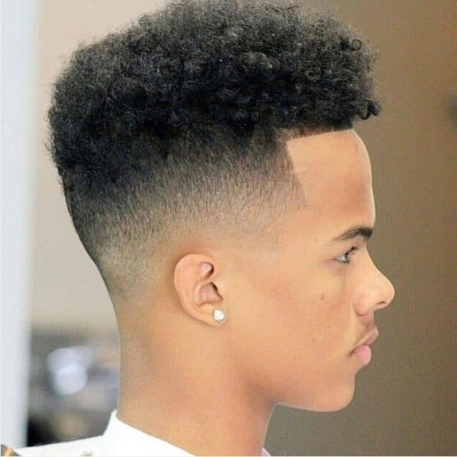

Cut Shop
Cortes com sabor

Cortes com sabor

Galera, olhem pra essa combinação perfeita entre volume e precisão. Apresento a vocês o *High Skin Fade com Topo Cacheado.
É um dos cortes mais pedidos hoje porque junta o melhor dos dois mundos: textura em cima, limpeza nas laterais.
O CORTE
A base: High Skin Fade
Nas laterais e na nuca trabalhamos com um _High Skin Fade_, ou degradê alto até a pele. Reparem como a transição começa zerada, na navalha, logo acima da orelha e sobe rápido.O Topo: Cachos Naturais
Em cima mantemos o comprimento e a textura natural do cabelo. É o _Topo Cacheado_ ou _Afro Curto_. Não tem química, não tem texturização artificial. A ideia é valorizar o cacho original, só dando forma.O Line Up Angular
O que dá o acabamento premium é o _Line Up_. Vejam a testa: a linha é reta, angulada e bem marcada na navalha. Ela cria uma separação nítida entre a pele e o cabelo, dando aquele aspecto geométrico.A HARMONIA
A sacada desse corte tá no equilíbrio. O _High Fade_ tira todo o volume das laterais, evitando o famoso "capacete". Com isso, toda a atenção vai pro topo cacheado, que fica livre pra ter movimento e atitude.Pra quem é?
É ideal pra quem tem cabelo crespo/cacheado e quer um visual moderno sem alisar ou mudar a textura. É versátil: fica bem na escola, no trabalho e na festa.Resumindo:
o *High Skin Fade com Topo Cacheado* é a prova de que dá pra ser limpo e volumoso ao mesmo tempo. É precisão nas laterais, liberdade em cima.